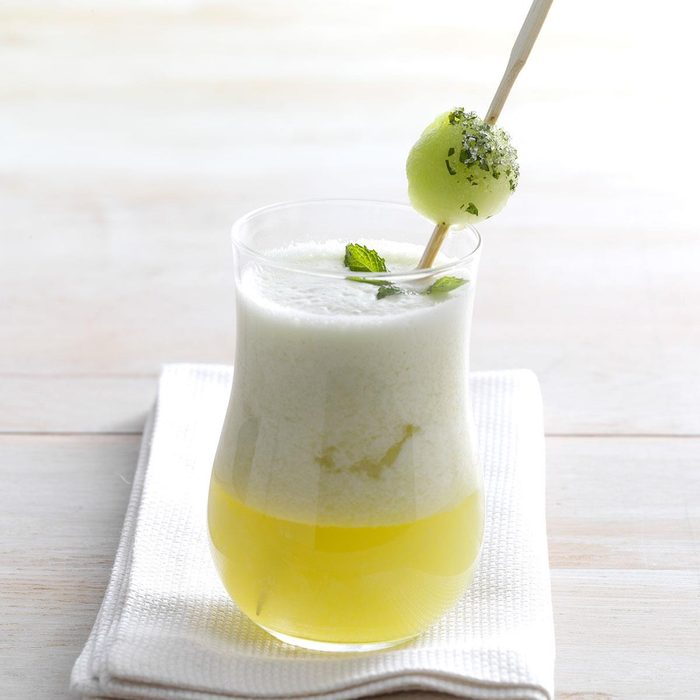

Iced Melon Moroccan Mint Tea

Description
Combines two popular drinks, Moroccan Mint Tea and Honeydew Agua Fresca. A minty sweet drink.
Ingredients
- 2 cups of water
- 12 fresh mint leaves
- 4 individual green tea bags
- 1/3 cups of sugar
- 2 1/2 cups of diced honeydew melon
- 1 1/2 cups of ice cubes
Directions
- In a large saucepan, bring water to a boil. Remove from the heat and add mint and tea bags.
- Cover and steep for 3-5 minutes. Discard mint and tea bags after, stir in the sugar
- In a blender, process honeydew until blended. Add 1 1/2 cups of ice and the tea, process until blended. Serve with additional ice.
Home
Other Recipes you Might Like:
Vanilla Chai Tea
Raspberry Iced Tea